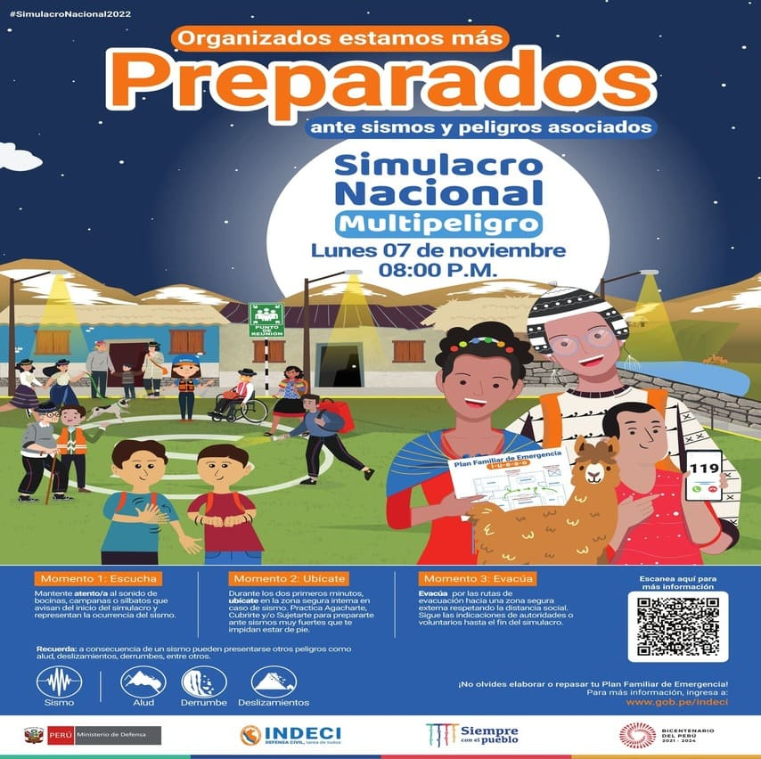

A escuchado sobre la tunantada? para saber más de este baile cultural entre aquí.
BIENVENIDOS A:
La Municipalidad Distrital De Yauyos
Esta página está enfocada a ofrecer a los ciudadanos yauyinos un sitio dónde encontrar una gran cantidad de información como servicios, actividades, tramites, recursos, etc. Todo esto relacionado con la administración de la municipalidad.
NUESTRO ALCALDE:
Ricardo González Ramos
Es un honor para mí dirigirme a cada uno de mis hermanas y hermanos, del pueblo de Yauyos, Paraíso y Capital de la Tunantada. Después de haber asumido el cargo de Alcalde Distrital de Yauyos deseo brindar mi gratitud a la población, ustedes demostraron su confianza en mí y permitieron que nuestro pueblo pueda tomar decisiones para recobrar la dignidad yauyina e implantar la fraternidad social que habíamos anunciado; realizando un diagnóstico situacional de la población, para determinar soluciones rápidas, es por eso que estamos dialogando con los trabajadores de la MDY, transportistas, comerciantes, agricultores y población en general, ya sea en la oficina o en el campo; para vivir ordenados.
Por ello, siempre defenderemos la democracia para luchar todos unidos y trabajar por un pueblo con nuevos retos, con dignidad y nobleza. Desde este recinto municipal les solicito su respaldo a mi persona, nuestros regidores y funcionarios que actuarán de manera comprometida con la ley y con ustedes.
EVENTOS

NUESTRO CONTENIDO:
Conozca los diferentes proyectos de la municipalidad que ya están terminados.
Entérece de los sucesos y acontecimientos más relevantes que están sucediendo en la localidad actualmente.
Tenga presente los diferentes servicios que nuestra municipalidad tiene para ofrecer a la ciudadanía.
Nuestra ciudad cuenta con algunos sitios turísticos que les pueden interesar.
Pongase en contacto si tiene cualquier duda y/o consulta.